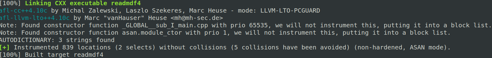
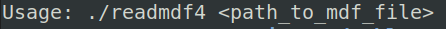
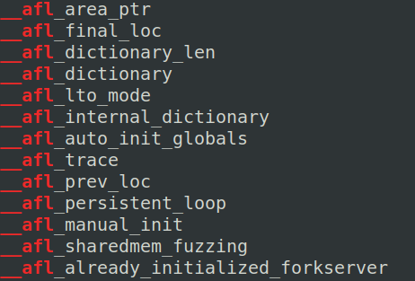
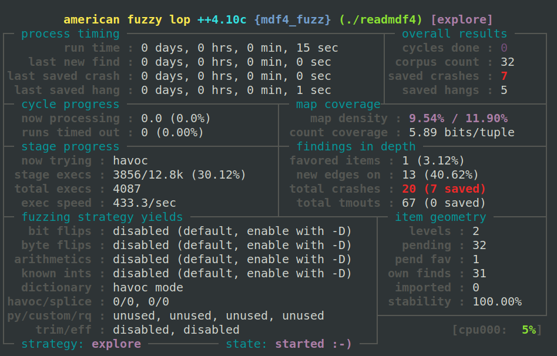

Buffer Overflow in MDF library - CVE-2024-41445
ASAM MDF4 (Measurement Data Format version 4) is a file format used to handle and store measurement data from automotive testing. Developed by ASAM (Association for Standardization of Automation and Measuring Systems), MDF4 is essential for keeping complex sensor data organized and accessible.
Real-Life Use Cases for ASAM MDF4 Files
- ADAS Calibration: MDF4 files log data from sensors and cameras in advanced driver-assistance systems (ADAS) like adaptive cruise control or lane-keeping assistance. Engineers use this data to refine system performance and ensure safety.
- Performance Testing: During high-performance vehicle tests, MDF4 files capture data from engine sensors, accelerometers, and GPS systems. This information is analyzed to optimize engine settings and improve vehicle handling.
- Diagnostic Analysis: MDF4 files provide a detailed record of sensor data, crucial for diagnosing vehicle issues and verifying the success of repairs.
In this article, I'll explain how I detected a buffer overflow vulnerability in the "libmdf" library and share some insights about its risks.
How is MDF4 Structured?
MDF4 files are structured to accommodate a wide range of data types and sources. Here's a breakdown of its key components:
- Header: Contains metadata about the file, such as version information and file size, setting the stage for how the rest of the data is organized.
- Data Blocks: The core of MDF4 files, these store various types of measurement data, such as time-series data from sensors. Each data block can contain multiple channels, essentially different streams of data from various sensors.
- Index: Provides a reference to where different sections of data are located within the file, allowing for quick access to specific parts without needing to read through the entire file.
- Metadata: Includes information about the measurement process, sensor calibration, and other contextual details essential for interpreting the data.
Source of image: https://www.asam.net/standards/detail/mdf/wiki/
To handle MDF4 files, the mdflib library is a useful tool. Written in C++, mdflib provides functionalities for reading, writing, and analyzing MDF4 files, facilitating the management and interpretation of automotive data.
Finding the Crash with AFL++ in MDF library
Recently, I decided to dive into a fun side project: using AFL++ (American Fuzzy Lop Plus Plus) to test how well software deals with ASAM MDF4 files. The idea was to see if I could uncover any hidden bugs or crashes by feeding the software some funky, random MDF4 data.
Creating a Fuzz Test Harness
The first step was to clone the repository into my local environment:
$ git clone https://github.com/ihedvall/mdflib.git
The repository contains multiple applications, but they all depend on the same library. I found a simple example code from the documentation page that performs a simple MDF4 read and slightly modified it. I placed the harness code as "main.cpp" inside the repository folder.page that performs a basic MDF4 read and slightly modified it. I placed the harness code as main.cpp inside the repository folder:
#include <iostream>
#include <mdf/mdfreader.h>
#include <mdf/ichannelgroup.h>
#include <mdf/idatagroup.h>
using namespace mdf;
int main(int argc, char* argv[]) {
if (argc < 2) {
std::cerr << "Usage: " << argv[0] << " <path_to_mdf_file>" << std::endl;
return 1;
}
const char* file_path = argv[1];
MdfReader reader(file_path); // Open the specified file
// Read all blocks but not the raw data and attachments.
// This reads in the block information into memory.
reader.ReadEverythingButData();
const auto* mdf_file = reader.GetFile(); // Get the file interface.
DataGroupList dg_list; // Get all measurements.
mdf_file->DataGroups(dg_list);
// In this example, we read in all sample data and fetch all values.
for (auto* dg4 : dg_list) {
// Subscribers holds the sample data for a channel.
// You should normally only subscribe on some channels.
// We need a list to hold them.
ChannelObserverList subscriber_list;
const auto cg_list = dg4->ChannelGroups();
for (const auto* cg4 : cg_list ) {
const auto cn_list = cg4->Channels();
for (const auto* cn4 : cn_list) {
// Create a subscriber and add it to the temporary list
auto sub = CreateChannelObserver(*dg4, *cg4, *cn4);
subscriber_list.push_back(std::move(sub));
}
}
// Now it is time to read in all samples
reader.ReadData(*dg4); // Read raw data from file
double channel_value = 0.0; // Channel value (no scaling)
double eng_value = 0.0; // Engineering value
for (auto& obs : subscriber_list) {
for (size_t sample = 0; sample < obs->NofSamples(); ++sample) {
const auto channel_valid = obs->GetChannelValue(sample, channel_value);
const auto eng_valid = obs->GetEngValue(sample, eng_value);
// You should do something with data here
}
}
// Not needed in this example as we delete the subscribers,
// but it is good practise to remove samples data from memory
// when it is no longer needed.
//dg4->ResetSample();
}
reader.Close(); // Close the file
return 0;
}
Compiling mdflib Using AFL++ Compilers
Before compiling the fuzz test binary and the libmdf, the project requires several dependencies to be pre-installed:
$ sudo apt install zlib1g-dev
$ sudo apt install libexpat-dev
I needed to make a few adjustments in the top CMakeLists.txt file of the project:
- Disabled the `cmake_policy`.
- Set C++17 to minimum
- Specified the executable for the fuzz test binary.
I then compiled the library and my fuzz test binary with AFL++ compiler plugins to insturment the target.
$ export AFL_USE_ASAN=1
$ export CC=$(which afl-clang-lto)
$ export CXX=$(which afl-clang-lto++)
$ cd mdflib
$ mkdir build && cd build
...
-- Build files have been written to: /home/fuzzer/mdflib/build_no_afl
$ make
Consolidate compiler generated dependencies of target mdf
[ 1%] Building CXX object mdflib/CMakeFiles/mdf.dir/src/hd3block.cpp.o
afl-cc++4.10c by Michal Zalewski, Laszlo Szekeres, Marc Heuse - mode: LLVM-LTO-PCGUARD
[ 2%] Building CXX object mdflib/CMakeFiles/mdf.dir/src/tx3block.cpp.o
afl-cc++4.10c by Michal Zalewski, Laszlo Szekeres, Marc Heuse - mode: LLVM-LTO-PCGUARD
[ 3%] Building CXX object mdflib/CMakeFiles/mdf.dir/src/pr3block.cpp.o
afl-cc++4.10c by Michal Zalewski, Laszlo Szekeres, Marc Heuse - mode: LLVM-LTO-PCGUARD
...

The binary is created inside build folder. I confirmed the binary was working and properly instrumented.
$ ./readmdf4

$ strings readmdf4 | grep afl

Generating a Valid MDF4 File as Seed Corpus
I needed a valid MDF4 file to kickstart fuzzing with the AFL++ instrumented binary. AFL++ demands a properly formatted file to work. However, the MDF4 samples I found online were usually over 3MB, which significantly slowed down the fuzzing process. So, I took matters into my own hands and created a minimal MDF4 writer using the ASAM MDF library in Python—simple, lightweight, and perfect for the job.
from asammdf import MDF, Signal
import numpy as np
# Create MDF object
mdf = MDF()
# Number of samples
cycles = 10
# Time base
t = np.arange(cycles, dtype=np.float64)
# Simple signal without conversion
sig1 = Signal(
np.ones(cycles, dtype=np.float64), # Signal data
t, # Time base
name='SimpleSignal', # Signal name
unit='s', # Unit of the signal
comment='A simple signal' # Comment about the signal
)
# Append the signal to the MDF file
mdf.append([sig1], comment='Minimal MDF4 example', common_timebase=True)
# Save the MDF file
mdf.save('demo.mf4', overwrite=True)
With the seed file ready, I launched the fuzz test with AFL++, and within seconds, crashes started pouring in!
# Need an empty output folder to save fuzz test state, crashes and hangs
$ mkdir output
# Need an input folder with a valid MDF4 file
$ mkdir input
# Copy the sample MDF4 to input folder
$ cp demo.mf4 input
$ afl-fuzz -i input/ -o output -M mdf4_fuzz ./readmdf4 @@

Triaging the crashes
Initially, I started investigating the crash using the output from AddressSanitizer. The output revealed that the Cn4Block::GetByteArrayValue function was causing a heap buffer overflow due to a memcpy operation.
$ ./readmdf4 output/mdf4_fuzz/crashes/id\:000000\,sig\:06\,src\:000000\,time\:88\,execs\:45\,op\:havoc\,rep\:3
==2877950==ERROR: AddressSanitizer: heap-buffer-overflow on address 0x61300000116e at pc 0x7fa1b1d2e397 bp 0x7fff5dd3c040 sp 0x7fff5dd3b7e8
READ of size 96 at 0x61300000116e thread T0
#0 0x7fa1b1d2e396 in __interceptor_memcpy ../../../../src/libsanitizer/sanitizer_common/sanitizer_common_interceptors.inc:827
#1 0x7fa1b19f4d6e in mdf::detail::Cn4Block::GetByteArrayValue(std::vector>unsigned char, std::allocator<unsigned char> > const&, std::vector<unsigned char, std::allocator<unsigned char> >&) const /home/fuzzer/mdflib/mdflib/src/cn4block.cpp:728
#2 0x7fa1b1a68b7f in bool mdf::IChannel::GetChannelValue<std::vector<unsigned char, std::allocator<unsigned char> > >(std::vector<unsigned char, std::allocator<unsigned char> > const&, std::vector<unsigned char, std::allocator<unsigned char> >&, unsigned long) const /home/fuzzer/mdflib/mdflib/src/ichannel.cpp:507
#3 0x7fa1b19877dd in mdf::detail::ChannelObserver<std::vector<unsigned char, std::allocator<unsigned char> > >::OnSample(unsigned long, unsigned long, std::vector<unsigned char, std::allocator<unsigned char> > const&) /home/fuzzer/mdflib/mdflib/src/channelobserver.h:147
#4 0x7fa1b1a71aca in mdf::IDataGroup::NotifySampleObservers(unsigned long, unsigned long, std::vector<unsigned char, std::allocator<unsigned char> > const&) const /home/fuzzer/mdflib/mdflib/src/idatagroup.cpp:39
#5 0x7fa1b1affee4 in mdf::detail::ReadCache::ParseRecord() /home/fuzzer/mdflib/mdflib/src/readcache.cpp:94
#6 0x7fa1b19b0e4e in mdf::detail::Dg4Block::ReadData(_IO_FILE*) /home/fuzzer/mdflib/mdflib/src/dg4block.cpp:274
#7 0x7fa1b19367fb in mdf::MdfReader::ReadData(mdf::IDataGroup&) /home/fuzzer/mdflib/mdflib/src/mdfreader.cpp:396
#8 0x561f200ef240 in main /home/fuzzer/mdflib/main.cpp:42
#9 0x7fa1b1181d8f in __libc_start_call_main ../sysdeps/nptl/libc_start_call_main.h:58
#10 0x7fa1b1181e3f in __libc_start_main_impl ../csu/libc-start.c:392
#11 0x561f200ee784 in _start (/home/fuzzer/mdflib/build_no_afl/readmdf4+0xa784)
0x61300000116e is located 0 bytes to the right of 366-byte region [0x613000001000,0x61300000116e)
allocated by thread T0 here:
#0 0x7fa1b1daa1e7 in operator new(unsigned long) ../../../../src/libsanitizer/asan/asan_new_delete.cpp:99
#1 0x7fa1b19292cf in __gnu_cxx::new_allocator<unsigned char>::allocate(unsigned long, void const*) /usr/include/c++/11/ext/new_allocator.h:127
#2 0x7fa1b19280c5 in std::allocator_traits<std::allocator<unsigned char> >::allocate(std::allocator<unsigned char>&, unsigned long) /usr/include/c++/11/bits/alloc_traits.h:464
#3 0x7fa1b192678f in std::_Vector_base<unsigned char, std::allocator<unsigned char> >::_M_allocate(unsigned long) /usr/include/c++/11/bits/stl_vector.h:346
#4 0x7fa1b1927a0e in std::_Vector_base<unsigned char, std::allocator<unsigned char> >::_M_create_storage(unsigned long) /usr/include/c++/11/bits/stl_vector.h:361
#5 0x7fa1b1925ddc in std::_Vector_base<unsigned char, std::allocator<unsigned char> >::_Vector_base(unsigned long, std::allocator<unsigned char> const&) /usr/include/c++/11/bits/stl_vector.h:305
#6 0x7fa1b19a06f6 in std::vector<unsigned char, std::allocator<unsigned char> >::vector(unsigned long, unsigned char const&, std::allocator<unsigned char> const&) /usr/include/c++/11/bits/stl_vector.h:524
#7 0x7fa1b1affd4e in mdf::detail::ReadCache::ParseRecord() /home/fuzzer/mdflib/mdflib/src/readcache.cpp:90
#8 0x7fa1b19b0e4e in mdf::detail::Dg4Block::ReadData(_IO_FILE*) /home/fuzzer/mdflib/mdflib/src/dg4block.cpp:274
#9 0x7fa1b19367fb in mdf::MdfReader::ReadData(mdf::IDataGroup&) /home/fuzzer/mdflib/mdflib/src/mdfreader.cpp:396
#10 0x561f200ef240 in main /home/fuzzer/mdflib/main.cpp:42
#11 0x7fa1b1181d8f in __libc_start_call_main ../sysdeps/nptl/libc_start_call_main.h:58
SUMMARY: AddressSanitizer: heap-buffer-overflow ../../../../src/libsanitizer/sanitizer_common/sanitizer_common_interceptors.inc:827 in __interceptor_memcpy
Shadow bytes around the buggy address:
0x0c267fff81d0: 00 00 00 00 00 00 00 00 00 00 00 00 00 00 00 00
0x0c267fff81e0: 00 00 00 00 00 00 00 00 00 00 00 00 00 00 00 00
0x0c267fff81f0: 00 00 fa fa fa fa fa fa fa fa fa fa fa fa fa fa
0x0c267fff8200: 00 00 00 00 00 00 00 00 00 00 00 00 00 00 00 00
0x0c267fff8210: 00 00 00 00 00 00 00 00 00 00 00 00 00 00 00 00
=>0x0c267fff8220: 00 00 00 00 00 00 00 00 00 00 00 00 00[06]fa fa
0x0c267fff8230: fa fa fa fa fa fa fa fa fa fa fa fa fa fa fa fa
0x0c267fff8240: fa fa fa fa fa fa fa fa fa fa fa fa fa fa fa fa
0x0c267fff8250: fa fa fa fa fa fa fa fa fa fa fa fa fa fa fa fa
0x0c267fff8260: fa fa fa fa fa fa fa fa fa fa fa fa fa fa fa fa
0x0c267fff8270: fa fa fa fa fa fa fa fa fa fa fa fa fa fa fa fa
Shadow byte legend (one shadow byte represents 8 application bytes):
Addressable: 00
Partially addressable: 01 02 03 04 05 06 07
Heap left redzone: fa
Freed heap region: fd
Stack left redzone: f1
Stack mid redzone: f2
Stack right redzone: f3
Stack after return: f5
Stack use after scope: f8
Global redzone: f9
Global init order: f6
Poisoned by user: f7
Container overflow: fc
Array cookie: ac
Intra object redzone: bb
ASan internal: fe
Left alloca redzone: ca
Right alloca redzone: cb
Shadow gap: cc
==2877950==ABORTING
Here's the function from the file "mdflib/mdflib/src/cn4block.cpp" starting at line 728:
bool Cn4Block::GetByteArrayValue(const std::vector<uint8_t> &record_buffer,
std::vector<uint8_t> &dest) const {
auto offset = ByteOffset();
uint64_t nof_bytes = BitCount() / 8;
bool valid = true;
if (Type() == ChannelType::VariableLength && VlsdRecordId() > 0) {
// If this is a VLSD channel and its data link points to a CG block, that
// CG block holds no signals. The VLSD CG block record are VLSD. If the data
// link pointed on an SD block, the that block holds the variable length
// data. The destination
offset = 0;
nof_bytes = record_buffer.size();
} else if (Type() == ChannelType::MaxLength && mlsd_channel_ != nullptr ) {
// Number of bytes is on another channel
valid = mlsd_channel_->GetUnsignedValue(record_buffer, nof_bytes);
}
if (Type() == ChannelType::VariableLength && VlsdRecordId() == 0) {
// Index into the local data buffer. Variable length record is stored
// in a SD block.
uint64_t index = 0; // Actual offset into the data block.
valid = GetUnsignedValue(record_buffer, index);
if (index + 4 > data_list_.size()) {
return false;
}
const LittleBuffer<uint32_t> length(data_list_, index);
dest.resize(length.value(), 0);
if (index + 4 + length.value() <= data_list_.size()) {
memcpy(dest.data(), data_list_.data() + index + 4, length.value());
} else {
valid = false;
}
} else {
dest.resize(nof_bytes);
// *** Here where the vulnerability happens ***
memcpy(dest.data(), record_buffer.data() + offset, nof_bytes);
}
return valid;
}
The offset and nof_bytes variables are calculated based on certain conditions, but there's no check to ensure that offset + nof_bytes does not exceed the size of record_buffer. If offset is set to a large value and nof_bytes is also large, this memcpy operation will attempt to read memory beyond the allocated space for record_buffer, leading to a heap overflow.
To investigate further, I recompiled the readmdf4 binary with debug symbols and disabled optimization for better insight during debugging. I then ran the new, non-AFL++ instrumented binary with gdb.
# Unsetting AFL++ compilers to use system compilers instead.
$ unset CC
$ unset CXX
$ cmake -DCMAKE_BUILD_TYPE=Debug -DCMAKE_CXX_FLAGS="-fsanitize=address -O0" ..
...
-- Build files have been written to: /home/fuzzer/mdflib/build_no_afl
$ make
...
[ 97%] Linking CXX shared library libmdflibraryd.so
[ 97%] Built target mdflibrary
[ 98%] Building CXX object CMakeFiles/readmdf4.dir/main.cpp.o
[100%] Linking CXX executable readmdf4
[100%] Built target readmdf4
$ gdb ./readmdf4
GNU gdb (Ubuntu 12.1-0ubuntu1~22.04.2) 12.1
Copyright (C) 2022 Free Software Foundation, Inc.
License GPLv3+: GNU GPL version 3 or later
This is free software: you are free to change and redistribute it.
There is NO WARRANTY, to the extent permitted by law.
Type "show copying" and "show warranty" for details.
This GDB was configured as "x86_64-linux-gnu".
Type "show configuration" for configuration details.
For bug reporting instructions, please see:
<https://www.gnu.org/software/gdb/bugs/>.
Find the GDB manual and other documentation resources online at:
<http://www.gnu.org/software/gdb/documentation/>.
For help, type "help".
Type "apropos word" to search for commands related to "word"...
Reading symbols from ./readmdf4...
I set breakpoint to the vulnerable "memcpy" call and run it with the crashing input. Each time the breakpoint hit, I printed the locals and the "record_buffer" length to observe the overflow.
gdb-peda$ b /home/fuzzer/mdflib/mdflib/src/cn4block.cpp:728
Breakpoint 1 at 0x7ffff72b1d14: file /home/fuzzer/mdflib/mdflib/src/cn4block.cpp, line 728.
gdb-peda$ run ../mdflibrary_example/src/build/output/default/crashes/id\:000005\,sig\:06\,src\:000126\,time\:2791772\,execs\:46097\,op\:havoc\,rep\:2
Starting program: /home/fuzzer/mdflib/build_no_afl/readmdf4 ../mdflibrary_example/src/build/output/default/crashes/id\:000005\,sig\:06\,src\:000126\,time\:2791772\,execs\:46097\,op\:havoc\,rep\:2
[Thread debugging using libthread_db enabled]
Using host libthread_db library "/lib/x86_64-linux-gnu/libthread_db.so.1".
....
Breakpoint 1, mdf::detail::Cn4Block::GetByteArrayValue (this=0x614000001240, record_buffer=std::vector of length 80, capacity 80 = {...}, dest=std::vector of length 8, capacity 8 = {...}) at /home/fuzzer/mdflib/mdflib/src/cn4block.cpp:728
728 memcpy(dest.data(), record_buffer.data() + offset, nof_bytes);
gdb-peda$ info locals
offset = 0x30
nof_bytes = 0x8
valid = 0x1
gdb-peda$ print record_buffer
$1 = std::vector of length 80, capacity 80 = {0x0, 0x0, 0x0, 0x0, 0x0, 0x0, 0x0, 0x0, 0x1, 0x0, 0x0, 0x0, 0x0, 0x0, 0x0, 0x0, 0x1, 0x0, 0x0, 0x0, 0x0, 0x0,
0x0, 0x0, 0x0, 0x0, 0x0, 0x0, 0x0, 0x0, 0x0, 0x0, 0x1, 0x0, 0x0, 0x0, 0x0, 0x0, 0x0, 0x0, 0x0, 0x0, 0x0, 0x0, 0x0, 0x0, 0x0, 0x0, 0x6f, 0x6f, 0x6f, 0x6f,
0x6f, 0x6f, 0x6f, 0x6f, 0x0, 0x0, 0x0, 0x0, 0x0, 0x0, 0x0, 0x0, 0x0, 0x0, 0x0, 0x0, 0x0, 0x0, 0x0, 0x0, 0x0, 0x0, 0x0, 0x0, 0x0, 0x0, 0x0, 0x0}
gdb-peda$ print offset
$2 = 0x30
gdb-peda$ print dest
$3 = std::vector of length 8, capacity 8 = {0x0, 0x0, 0x0, 0x0, 0x0, 0x0, 0x0, 0x0}
gdb-peda$ c
After a couple of cycles, I confirmed the decimal value of "offset+nof_bytes" is 367 which is larger than "record_buffer.size()" which is 366, and got the AddressSanitizer crash in the next step.
Breakpoint 1, mdf::detail::Cn4Block::GetByteArrayValue (this=0x614000006440, record_buffer=std::vector of length 366, capacity 366 = {...}, dest=std::vector of length 96, capacity 96 = {...}) at /home/fuzzer/mdflib/mdflib/src/cn4block.cpp:728
728 memcpy(dest.data(), record_buffer.data() + offset, nof_bytes);
gdb-peda$ info locals
offset = 0x10f
nof_bytes = 0x60
valid = 0x1
gdb-peda$ print record_buffer
$87 = std::vector of length 366, capacity 366 = {0x0, 0x0, 0x0, 0x0, 0x0, 0x0, 0x0, 0x0, 0x1, 0x0, 0x0, 0x0, 0x0, 0x0, 0x0, 0x0, 0x1, 0x0, 0x0, 0x0, 0x0,
0x0, 0x0, 0x0, 0x1, 0x0, 0x0, 0x0, 0x0, 0x0, 0x0, 0x0, 0x1, 0x0, 0x0, 0x0, 0x0, 0x0, 0x0, 0x0, 0x1, 0x0, 0x0, 0x0, 0x0, 0x0, 0x0, 0x0, 0x1, 0x0, 0x0, 0x0,
0x0, 0x0, 0x0, 0x0, 0x2, 0x0, 0x0, 0x0, 0x0, 0x0, 0x0, 0x0, 0x2, 0x0, 0x0, 0x0, 0x0, 0x0, 0x0, 0x0, 0x3, 0x0, 0x0, 0x0, 0x0, 0x0, 0x0, 0x0, 0x3, 0x0, 0x0,
0x0, 0x0, 0x0, 0x0, 0x0, 0x3, 0x0, 0x0, 0x0, 0x0, 0x0, 0x0, 0x0, 0x4, 0x0, 0x0, 0x0, 0x0, 0x0, 0x0, 0x0, 0x4, 0x0, 0x0, 0x0, 0x0, 0x0, 0x0, 0x0, 0x4, 0x0,
0x0, 0x0, 0x0, 0x0, 0x0, 0x0, 0x4, 0x0, 0x0, 0x0, 0x0, 0x0, 0x0, 0x0, 0x4, 0x0, 0x0, 0x0, 0x0, 0x0, 0x0, 0x0, 0x4, 0x0, 0x0, 0x0, 0x0, 0x0, 0x0, 0x0, 0xa,
0x14, 0x0, 0x1e, 0x0, 0x0, 0x0, 0x28, 0x0, 0x0, 0x0, 0x0, 0x0, 0x0, 0x0, 0xf6, 0xec, 0xff, 0xe2, 0xff, 0xff, 0xff, 0xd8, 0xff, 0xff, 0xff, 0xff, 0xff,
0xff, 0xff, 0x0, 0x0, 0x0, 0x0, 0x0, 0x80, 0x44, 0x40, 0x0, 0x0, 0x0, 0x0, 0x0, 0x0, 0x45, 0x40, 0x0, 0x0, 0x0, 0x0, 0x0, 0x80, 0x45, 0x40, 0x0, 0x0...}
gdb-peda$ n
=================================================================
==3456717==ERROR: AddressSanitizer: heap-buffer-overflow on address 0x61300000116e at pc 0x7ffff75eb397 bp 0x7fffffffc030 sp 0x7fffffffb7d8
Summary
Parsing MDF4 files triggers a flaw in the ReadData function within the MdfReader class, leading to read arbirary data from the memory by abusing the "memcpy" with a malicious MDF payload. Since gRPC server is not released yet, the only known impact can be against the mdfviewer application.
- 23 June 2024: Issue has reported to the developer, accepted as bug and fixed in next release.
- 3 August 2024: Got CVE-2024-41445 assigned from MITRE.